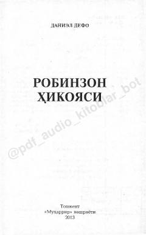

RKCho'lda yolg'iz qolgan insonning hayot uchun kurashi va ma'naviy kamoloti haqidagi mashhur asar.
Ushbu asar Daniel Defoning mashhur 'Robinzon Kruzo' romanining XX asr boshlarida Fozilbek Otabek o'g'li tomonidan amalga oshirilgan qisqartirilgan tarjimasidir. Kitobda insonning yolg'izlikdagi hayoti, ma'naviy-axloqiy qarashlari va jamiyatdagi o'rni haqidagi falsafiy g'oyalar yoritilgan.